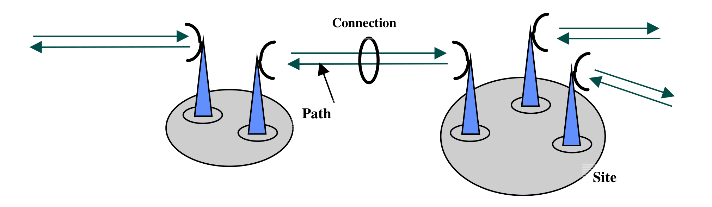

Frequency assignment problem with polarization¶
Brief description¶
The previously-described Radio link frequency assignment problem has been extended to take into account polarization constraints and user-defined relaxation of electromagnetic compatibility constraints. The problem is to assign a pair (frequency,polarization) to every radio communication link (also called a path). Frequencies are integer values taken in finite domains. Polarizations are in {-1,1}. Constraints are :
(I) two paths must use equal or different frequencies (f_i=f_j or f_i<>f_j),
(II) the absolute difference between two frequencies should exactly be equal or different to a given number e (|f_i-f_j|=e or |f_i-f_j|<>e),
(III) two paths must use equal or different polarizations (p_i=p_j or p_i<>p_j),
(IV) the absolute difference between two frequencies should be greater at a relaxation level l (0 to 10) than a given number g_l (resp. d_l) if polarization are equal (resp. different) (|f_i-f_j|>=g_l if p_i=p_j else |f_i-f_j|>=d_l), with g_(l-1)>g_l, d_(l-1)>d_l, and usually g_l>d_l.
Constraints (I) to (III) are mandatory constraints, while constraints (IV) can be relaxed. The goal is to find a feasible assignment with the smallest relaxation level l and which minimizes the number of violations of (IV) at lower levels. See ROADEF Challenge 2001.
Physical description and mathematical formulation
{kind=link}
CFN model¶
In order to benefit from soft local consistencies on binary cost functions, we create a single variable to represent a pair (frequency,polarization) for every radio link.
Data¶
Original data files can be download from ROADEF or fapp. Their format is described here. You can try a small example exemple1.in (resp. exemple2.in) with optimum 523 at relaxation level 3 with 1 violation at level 2 and 3 below (resp. 13871 at level 7 with 1 violation at level 6 and 11 below). See ROADEF Challenge 2001 results.
Python model generator¶
The following code using python3 interpreter will generate the corresponding cost function network (e.g. “python3 fapp.py exemple1.in 3”). You can also compile fappeval.c using “gcc -o fappeval fappeval.c” and download sol2fapp.awk in order to evaluate the solutions (e.g., “python3 fapp.py exemple1.in 3 | toulbar2 –stdin=cfn -s=3 | awk -f ./sol2fapp.awk - exemple1”).
import sys
def flatten(x):
result = []
for el in x:
if hasattr(el, "__iter__") and not isinstance(el, str) and not isinstance(el, tuple) and not isinstance(el, dict):
result.extend(flatten(el))
else:
result.append(el)
return result
def cfn(problem, isMinimization, initPrimalBound, floatPrecision=0):
globals_key_order = ["metric", "cost", "bounds", "vars1", "vars2", "nb_states", "starts", "ends", "transitions", "nb_symbols", "nb_values", "start", "terminals", "non_terminals", "min", "max", "values", "defaultcost", "tuples", "comparator", "to"]
print('{')
print('\tproblem: { "name": "%s", "mustbe": "%s%.*f" },' % (problem["name"], "<" if (isMinimization) else ">", floatPrecision, initPrimalBound))
print('\tvariables: {', end='')
for i,e in enumerate(problem["variables"]):
if i > 0: print(', ', end='')
print('"%s":' % e[0], end='')
if isinstance(e[1], int):
print(' %s' % e[1], end='')
else:
print('[', end='')
for j,a in enumerate(e[1]):
if j > 0: print(', ', end='')
print('"%s"' % a, end='')
print(']', end='')
print('},')
print( '\tfunctions: {')
for i,e in enumerate(flatten(problem["functions"])):
if i > 0: print(',')
if e.get("name") is not None: print('\t\t"%s": {scope: [' % e.get("name"), end='')
else: print('\t\t{scope: [', end='')
for j,x in enumerate(e.get("scope")):
if j > 0: print(', ', end='')
print('"%s"' % x, end='')
print('], ', end='')
if e.get("type") is not None:
print('"type:" %s, ' % e.get("type"), end='')
if e.get("params") is not None:
if isinstance(e.get("params"), dict):
print('"params": {', end='')
first = True
for key in globals_key_order:
if key in e.get("params"):
if not first: print(', ', end='')
if isinstance(e.get("params")[key], str): print('"%s": "%s"' % (str(key),str(e.get("params")[key]).replace("'", '"')), end='')
else: print('"%s": %s' % (str(key),str(e.get("params")[key]).replace("'", '"')), end='')
first = False
print ('}', end='')
else: print('"params": %s, ' % str(e.get("params")).replace("'",'"'), end='')
if e.get("defaultcost") is not None:
print('"defaultcost:" %s, ' % e.get("defaultcost"), end='')
if e.get("costs") is not None:
print('"costs": ', end='')
if isinstance(e.get("costs"), str):
print('"%s"' % e.get("costs"), end='') # reuse future cost function by giving its name here
else:
print('[', end='')
for j,c in enumerate(e.get("costs")):
if j > 0: print(', ', end='')
if isinstance(c, str) and not c.isdigit():
print('"%s"' % c, end='')
else:
print('%s' % c, end='')
print(']', end='')
print('}', end='')
print('}\n}')
class Data:
def __init__(self, filename, k):
self.var = list()
self.dom = {}
self.ctr = list()
self.softeq = list()
self.softne = list()
self.nbsoft = 0
self.top = 1
self.cst = 0
stream = open(filename)
for line in stream:
if len(line.split())==3 and line.split()[0]=="DM":
(DM, dom, freq) = line.split()[:3]
if self.dom.get(int(dom)) is None:
self.dom[int(dom)] = [int(freq)]
else:
self.dom[int(dom)].append(int(freq))
if len(line.split()) == 4 and line.split()[0]=="TR":
(TR, route, dom, polarisation) = line.split()[:4]
if int(polarisation) is 0:
self.var.append((int(route), [(f,-1) for f in self.dom[int(dom)]] + [(f,1) for f in self.dom[int(dom)]]))
if int(polarisation) is -1:
self.var.append((int(route), [(f,-1) for f in self.dom[int(dom)]]))
if int(polarisation) is 1:
self.var.append((int(route), [(f,1) for f in self.dom[int(dom)]]))
if len(line.split())==6 and line.split()[0]=="CI":
(CI, route1, route2, vartype, operator, deviation) = line.split()[:6]
self.ctr.append((int(route1), int(route2), vartype, operator, int(deviation)))
if len(line.split())==14 and line.split()[0]=="CE":
(CE, route1, route2, s0, s1, s2, s3, s4, s5, s6, s7, s8, s9, s10) = line.split()[:14]
self.softeq.append((int(route1), int(route2), [int(s) for s in [s0, s1, s2, s3, s4, s5, s6, s7, s8, s9, s10]]))
self.nbsoft += 1
if len(line.split())==14 and line.split()[0]=="CD":
(CD, route1, route2, s0, s1, s2, s3, s4, s5, s6, s7, s8, s9, s10) = line.split()[:14]
self.softne.append((int(route1), int(route2), [int(s) for s in [s0, s1, s2, s3, s4, s5, s6, s7, s8, s9, s10]]))
# self.nbsoft += 1
self.cst = 10*k*self.nbsoft**2
self.top += self.cst
self.top += 10*self.nbsoft**2
def model(data, k):
Var = {e[0]: "X" + str(e[0]) for e in data.var}
Domain = {e[0]: e[1] for e in data.var}
FAPP = {
"name": "FAPP",
"variables": [(Var[e[0]], ["f" + str(f) + "p" + str(p) for (f,p) in e[1]]) for e in data.var],
"functions":
[# hard constraints
[{"scope": [Var[route1], Var[route2]], "costs": [0 if ((operand=="I" and abs((f1 if vartype=="F" else p1) - (f2 if vartype=="F" else p2)) != deviation)
or (operand=="E" and abs((f1 if vartype=="F" else p1) - (f2 if vartype=="F" else p2)) == deviation)) else data.top
for (f1,p1) in Domain[route1] for (f2,p2) in Domain[route2]]}
for (route1, route2, vartype, operand, deviation) in data.ctr],
# soft equality constraints
[{"scope": [Var[route1], Var[route2]], "costs": [0 if p1!=p2 or abs(f1 - f2) >= deviations[i] else (data.top if i>=k else (1 if i<k-1 else 10*data.nbsoft))
for (f1, p1) in Domain[route1] for (f2, p2) in Domain[route2]]}
for i in range(11) for (route1, route2, deviations) in data.softeq],
# soft inequality constraints
[{"scope": [Var[route1], Var[route2]], "costs": [0 if p1==p2 or abs(f1 - f2) >= deviations[i] else (data.top if i>=k else (1 if i<k-1 else 10*data.nbsoft))
for (f1, p1) in Domain[route1] for (f2, p2) in Domain[route2]]}
for i in range(11) for (route1, route2, deviations) in data.softne],
# constant cost to be added corresponding to the relaxation level
{"scope": [], "defaultcost": data.cst, "costs": []}
]
}
return FAPP
if __name__ == '__main__':
# read parameters
if len(sys.argv) < 2: exit('Command line argument is problem data filename and relaxation level')
k = int(sys.argv[2])
data = Data(sys.argv[1], k)
# dump problem into JSON .cfn format for minimization
cfn(model(data, k), True, data.top)